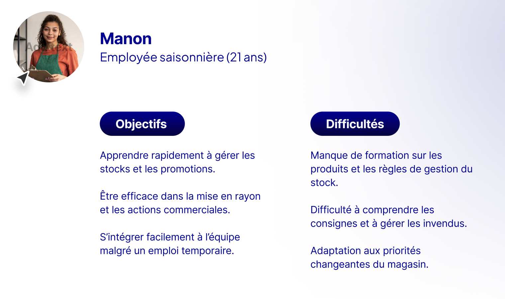

Workshop IA Cegedim

Contexte
Pour ce Workshop, nous avons eu l'opportunité de travailler sur un projet d'innovation pour l'entreprise Cegedim, aidés par l'agence de design Upgrade. Cegedim vend des logiciels à destination d'entreprises privées ou publiques. Cegedim nous a demandé de fournir 3 propositions à la fin de la semaine pour intégrer l'IA dans ses logiciels de pharmacie, Upharma. Durant la semaine, nous avons appliqué une méthode proche du Design Sprint, une méthodologie efficace pour un projet de recherche.
Problématique
Veilles et recherches
IA de prédiction : Anticipation des besoins des utilisateurs et des clients via l'analyse des données.
IA de génération : Production de contenus et analyses pertinentes pour les utilisateurs.
IA d’automatisation : Réduction des tâches répétitives et amélioration de l'efficacité opérationnelle.
Les possibilités d'interactions sont restreintes mais néanmoins adaptées à beaucoup d'usages. On trouve principalement le prompt, le bouton (permet de créer un rendu prédéfini), le questionnaire (permet de ranger directement les informations dans un cadre plus restreint) et les notifications et les rappels (permettent d'afficher des réflexions d'une IA fonctionnant en arrière-plan).
L'IA peut ensuite prédire des événements en s'appuyant sur des données en direct et passées disponibles dans des historiques. Elle peut également adapter son interaction à l'utilisateur et son contexte. Elle peut également faciliter la communication entre les différents employés, ou externes de l'entreprise. Elle peut s'améliorer et s'adapter indépendamment de l'entreprise propriétaire en recevant des retours. Elle peut également générer du contenu et expliquer ses raisonnements pour que l'humain détecte les possibles incohérences.
Épicerie Fine
Nous avons eu la possibilité de travailler sur un type de commerce avec lequel nous étions plus familiers. Nous avons donc choisi l'Épicerie Fine, un domaine à la même échelle que la pharmacie, et régi par les mêmes contraintes.
Nos Personas
Analyse des interactions
Gestion RH : Recrutement et gestion administrative, planification des horaires et gestion des congés, suivi des performances et formations, gestion des obligations légales et sociales, communication interne et résolution des conflits.
Gestion de la facturation : Vérification et validation des factures, émission et suivi des paiements, gestion des relances et impayés, suivi fiscal et archivage comptable.
Gestion des stocks : Contrôle des livraisons et des stocks, identification des besoins en réapprovisionnement, gestion des pertes et des invendus, optimisation de l’espace de stockage.
Flux d’achats et ventes : Négociation avec les fournisseurs, gestion des commandes clients et fournisseurs, suivi des livraisons et service après-vente.
Apports de l'IA
Gestion RH : Analyse des CV, génération automatique des plannings, gestion des fiches de paie, prévision des besoins en recrutement, analyse du turnover, création de descriptions de poste et rédaction de mails automatisés.
Gestion de la facturation : Validation des factures via OCR, relances automatiques des paiements, prédiction des retards de paiement, analyse des écarts factures-commandes, rapports financiers automatiques.
Gestion des stocks : Mise à jour automatique des niveaux de stock, prédiction des besoins en stock, identification des invendus, suggestions de fournisseurs et ajustement des commandes.
Flux d’achats et ventes : Traitement des commandes clients, gestion automatique des stocks, prédiction des périodes de forte demande, ajustement des prix et création de campagnes marketing.
Notre approche sur l'intégration de l'IA
Nous avons choisi que l'IA serait disponible à chaque étape afin d'accompagner l'utilisateur. Afin de ne pas déranger les utilisateurs qui ne le souhaitent pas et pour éviter une mauvaise adoption de cet outil, l'IA ne prend la forme que de boutons, suggestions ou notifications. En général, l'utilisateur doit être à l'origine de l'interaction. Elle est néanmoins présente sous la forme d'indicateurs. En résumé, pour s'adresser à un public large de professionnels, il faut un outil complet et omniscient, mais surtout discret et non bloquant.
Axe 1 - Optimisation de la gestion des commandes
Problème : Gérer les stocks en évitant les pertes de produits périssables.
Solution de l'IA : Détection des problèmes liés au stock, proposition de réductions adaptées à la criticité du stock et proposition de solutions avec justification.
Interactions IA / Utilisateur : Tableau de bord avec score de criticité des produits et notification pour alerter sur les produits à risque.
L'IA du logiciel propose une commande dépendant des stocks, des commandes passées et des tendances du marché.
Afin de vérifier le raisonnement de l'IA, on peut avoir une explication détaillée sur les raisons qui poussent l'IA à proposer chaque produit. Elle peut également donner des informations importantes en partageant les résultats.
Axe 2 - Dashboard personnalisé par l'IA
Problème : Chaque employé a des besoins différents (gérant, responsable de rayon, saisonnier). La création de composants personnalisés est manuelle et doit passer par Cegedim.
Solution de l'IA : L’IA propose les éléments les plus pertinents selon son profil, adapte la présentation des données et leur agencement, et corrige le résultat de l’IA dans le chat.
Interactions IA / Utilisateur : Adaptation dynamique de l’interface et chat avec l’IA.
Le processus de création de nouveaux widgets est un processus long et pénible pour les utilisateurs. Aujourd'hui, l'IA nous permet de générer du contenu personnalisé localement. Il faut cependant cadrer l'IA afin que le résultat soit le plus pertinent. La personnalisation de l'interface est disponible dans un chat. Au début de l'interaction, l'IA propose des axes sur lesquels elle peut travailler et propose également une disposition en fonction des habitudes et des préférences de l'utilisateur.
Axe 3 - Identification des produits à risque d'invendus et promotions ciblées
Problème : Gérer les stocks en évitant les pertes de produits périssables.
Solution de l'IA : Détection des problèmes liés au stock, proposition de réductions adaptées à la criticité du stock et proposition de solutions avec justification.
Interactions IA / Utilisateur : Tableau de bord avec score de criticité des produits et notification pour alerter sur les produits à risque.
Merci à Cegedim pour leur temps consacré et leur confiance. Et merci à l'équipe d'Upgrade de nous avoir accompagnés et conseillés.
Voir d'autres projets :